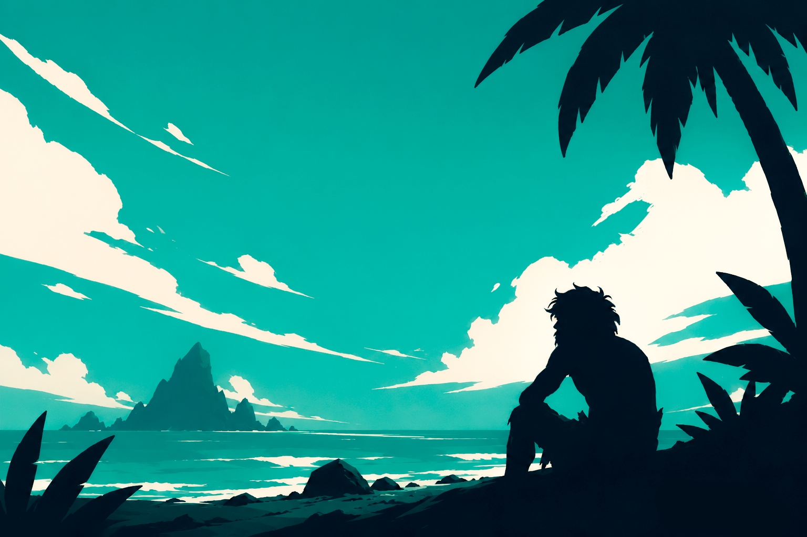
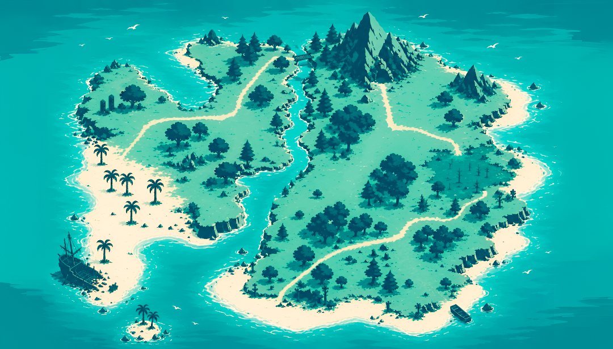

CARGANDO...Cada respuesta decide tu destino. Consigue recursos, cuida tu energía y construye el barco para sobrevivir.

Tu misión es mantenerte con vida, administrar tus recursos y construir el barco antes de quedarte sin nada.
Empiezas con vida. Cada error te quita −20 de vida.
Si llega a 0 → ❌ "Perdiste. Vuelve a intentar."
La energía baja 1 cada 10 segundos.
💧 El agua es la única forma de recuperarla.
Recupera vida según la dificultad:
Fácil: +20 ❤️ | Difícil: +5 ❤️
Sirven para construir el barco. Puntos según intentos:
Sobrevive, responde con precisión y construye el barco antes de que tus recursos se agoten.
Vuelve a intentar.
Completaste todas las estaciones